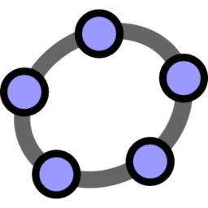

以 ggb5 證明餘弦定理
BLOCK

using GeoGebra Classic Version 5
BLOCK
動機
ggb5 為數學模擬軟體，希望能藉由圖像化的工具證明很重要的餘弦定理。
BLOCK
目的
以 ggb5 實作圖像證明法並與代數證明法比較，分成使用畢氏定理證明與使用圓幕性質證明。
BLOCK
實驗方法
▪ 使用滑桿製作分解步驟，以動畫的方式呈現證明方法。
▪ -
▪ -
▪ -
BLOCK
遇到的困難
理論證明看不太懂、不太會操作 ggb。
BLOCK
解決辦法
問數學老師、上網找資料。
BLOCK
結論
圖形證明法通俗易懂，無法直接計算；代數證明法複雜但精簡，可以成為公式。
BLOCK
BLOCK
成果成品
BLOCK

▪ 下載連結 書面文章：
▪ 下載連結 簡報：
▪ 下載連結 作品檔案：
▪ 作品公開連結位置：
BLOCK